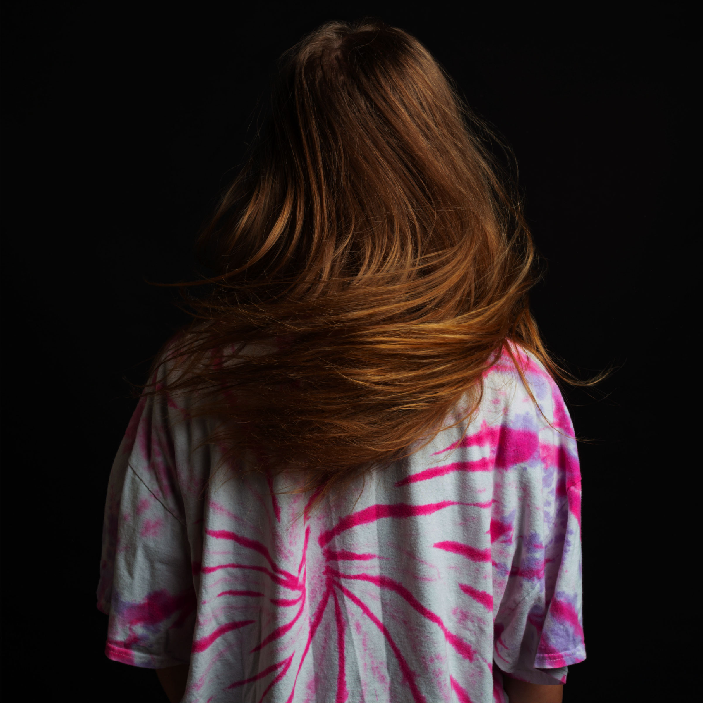
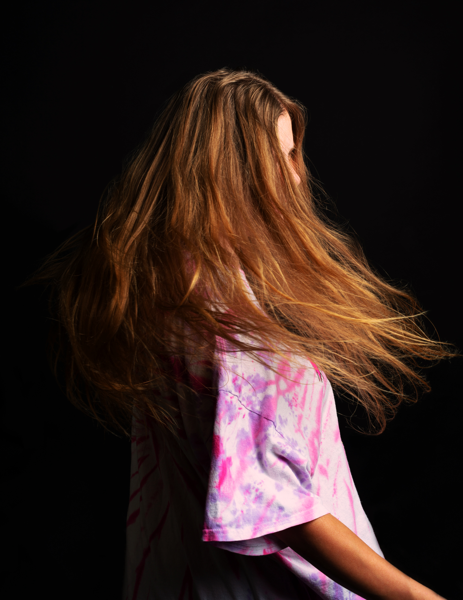

Photography


In this beginner's photography class project, we have artfully captured the essence of your roommate through a series of photographs. We explore the interplay of shadows and highlights, revealing the intricate dance of light and darkness on her face. Two dynamic images showcase the mesmerizing movement as she shakes her hair, demonstrating the beauty of motion through the lens. In the third image, we shift our focus to a close-up of a single side of her face, unveiling a striking and intimate portrait that encapsulates her character and essence. This project offers a captivating exploration of photography's fundamental principles, from light and shadow to the captivating allure of movement and the power of portraiture.